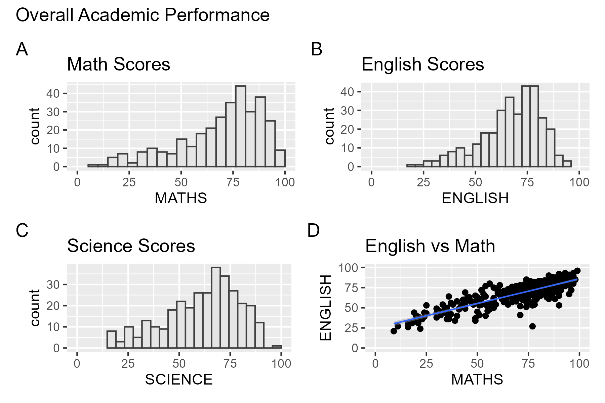
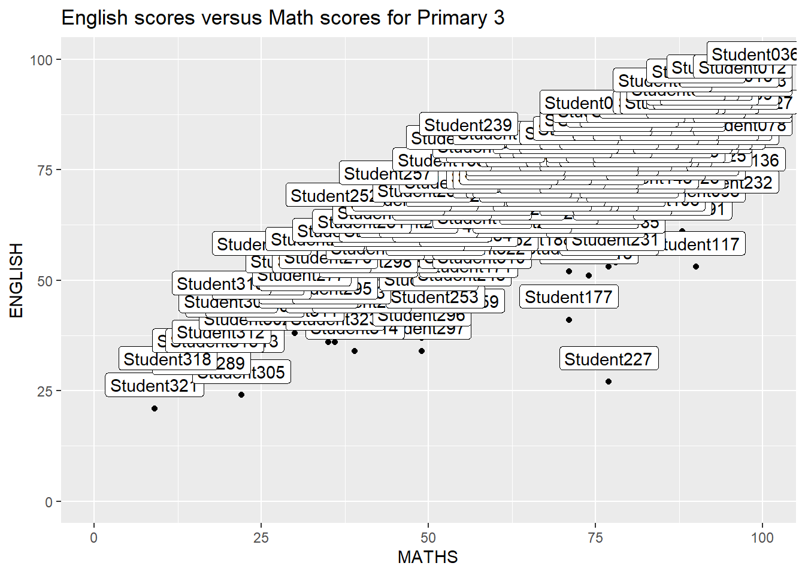
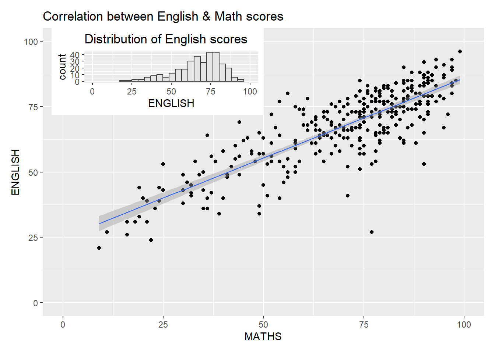

Hands-0n Exercise 2:
Beyond ggplot2 Fundamentals
1. Overview

In this chapter, I learned about ggplot2 extensions for creating more effective statistical graphics.
The goals of this exercise was to:
- control the placement of annotation on a graph by using functions provided in ggrepel package,
- create professional publication quality figure by using functions provided in ggthemes and hrbrthemes packages, and
- plot composite figure by combining ggplot2 graphs by using patchwork package.
2. Getting Started
In this exercise, beside tidyverse, four R packages will be used. They are: - ggrepel: an R package provides geoms for ggplot2 to repel overlapping text labels. - ggthemes: an R package provides some extra themes, geoms, and scales for ‘ggplot2’. - hrbrthemes: an R package provides typography-centric themes and theme components for ggplot2. - patchwork: an R package for preparing composite figure created using ggplot2.
For the purpose of this exercise, a data file called Exam_data will be used. It consists of year end examination grades of a cohort of primary 3 students from a local school. It is in csv file format.
The code chunk below imports exam_data.csv into R environment by using read_csv() function of readr package. readr is one of the tidyverse package.
The summary shows a year-end examination grades.
There are 7 features:
- Categorical: ID, CLASS, GENDER, RACE - Continuous: MATH, ENGLISH, SCIENCE
ID CLASS GENDER RACE
Length:322 Length:322 Length:322 Length:322
Class :character Class :character Class :character Class :character
Mode :character Mode :character Mode :character Mode :character
ENGLISH MATHS SCIENCE
Min. :21.00 Min. : 9.00 Min. :15.00
1st Qu.:59.00 1st Qu.:58.00 1st Qu.:49.25
Median :70.00 Median :74.00 Median :65.00
Mean :67.18 Mean :69.33 Mean :61.16
3rd Qu.:78.00 3rd Qu.:85.00 3rd Qu.:74.75
Max. :96.00 Max. :99.00 Max. :96.00 These are the top rows of exam_data
# A tibble: 6 × 7
ID CLASS GENDER RACE ENGLISH MATHS SCIENCE
<chr> <chr> <chr> <chr> <dbl> <dbl> <dbl>
1 Student321 3I Male Malay 21 9 15
2 Student305 3I Female Malay 24 22 16
3 Student289 3H Male Chinese 26 16 16
4 Student227 3F Male Chinese 27 77 31
5 Student318 3I Male Malay 27 11 25
6 Student306 3I Female Malay 31 16 16Rows: 322
Columns: 7
$ ID <chr> "Student321", "Student305", "Student289", "Student227", "Stude…
$ CLASS <chr> "3I", "3I", "3H", "3F", "3I", "3I", "3I", "3I", "3I", "3H", "3…
$ GENDER <chr> "Male", "Female", "Male", "Male", "Male", "Female", "Male", "M…
$ RACE <chr> "Malay", "Malay", "Chinese", "Chinese", "Malay", "Malay", "Chi…
$ ENGLISH <dbl> 21, 24, 26, 27, 27, 31, 31, 31, 33, 34, 34, 36, 36, 36, 37, 38…
$ MATHS <dbl> 9, 22, 16, 77, 11, 16, 21, 18, 19, 49, 39, 35, 23, 36, 49, 30,…
$ SCIENCE <dbl> 15, 16, 16, 31, 25, 16, 25, 27, 15, 37, 42, 22, 32, 36, 35, 45…3. Beyond ggplot2: ggrepel
One of the challenge in plotting statistical graph is annotation, especially with large number of data points.
Show the code

ggrepel is an extension of ggplot2 package which provides geoms for ggplot2 to repel overlapping text as in our examples on the right.
We simply replace geom_text() by geom_text_repel() and geom_label() by geom_label_repel.
3.1 Working with ggrepel
4. Beyond ggplot2: Themes
ggplot2 comes with eight built-in themes, they are: theme_gray(), theme_bw(), theme_classic(), theme_dark(), theme_light(), theme_linedraw(), theme_minimal(), and theme_void().
Show the code

Refer to this link to learn more about ggplot2 Themes
ggthemes provides ‘ggplot2’ themes that replicate the look of plots by Edward Tufte, Stephen Few, Fivethirtyeight, The Economist, ‘Stata’, ‘Excel’, and The Wall Street Journal, among others.

hrbrthemes package provides a base theme that focuses on typographic elements, including where various labels are placed as well as the fonts that are used. The second goal centers around productivity for a production workflow. In fact, this “production workflow” is the context for where the elements of hrbrthemes should be used.


5. Beyond Single Graph
It is not unusual that multiple graphs are required to tell a compelling visual story. There are several ggplot2 extensions provide functions to compose figure with multiple graphs. In this section, we create composite plot by combining multiple graphs. First, create three statistical graphics by using the code chunk below.

5.1 Creating Composite Graphics: pathwork methods
There are several ggplot2 extension’s functions support the needs to prepare composite figure by combining several graphs such as grid.arrange() of gridExtra package and plot_grid() of cowplot package. In this section, we use ggplot2 extension called patchwork which is specially designed for combining separate ggplot2 graphs into a single figure.
Patchwork package has a very simple syntax, such as:
- Two-Column Layout using the Plus Sign +.
- Parenthesis () to create a subplot group.
- Two-Row Layout using the Division Sign
/
5.2 Combining two ggplot2 graphs
Figure below shows a composite of two histograms created using patchwork.
5.3 Combining three ggplot2 graphs
We can plot more complex composite by using appropriate operators. For example, the composite figure below is plotted by using:
- “|” operator to stack two ggplot2 graphs,
- “/” operator to place the plots beside each other,
- “()” operator the define the sequence of the plotting.
To learn more, refer to Plot Assembly.
5.4 Creating a composite figure with tag
In order to identify subplots in text, patchwork also provides auto-tagging capabilities as shown in the figure below.
5.5 Creating figure with inset
Beside providing functions to place plots next to each other based on the provided layout. With inset_element() of patchwork, we can place one or several plots or graphic elements freely on top or below another plot.
Show the code
p4 <- ggplot(data=exam_data,
aes(x = MATHS)) +
geom_histogram(bins=20,
boundary = 100,
color="grey25",
fill="grey90") +
coord_cartesian(xlim=c(0,100)) +
ggtitle("Distribution of Math scores")
p5 <- ggplot(data=exam_data,
aes(x = ENGLISH)) +
geom_histogram(bins=20,
boundary = 100,
color="grey25",
fill="grey90") +
coord_cartesian(xlim=c(0,100)) +
ggtitle("Distribution of English scores")
p6 <- ggplot(data=exam_data,
aes(x= MATHS,
y=ENGLISH)) +
geom_point() +
geom_smooth(method=lm,
size=0.5) +
coord_cartesian(xlim=c(0,100),
ylim=c(0,100)) +
ggtitle("Correlation between English & Math scores")
p6 + inset_element(p5,
left = 0.02,
bottom=0.7,
right= 0.5,
top=1)
5.6 Composite figure: Patchwork + ggtheme
Figure below is created by combining patchwork and theme_economist() of ggthemes package discussed earlier.